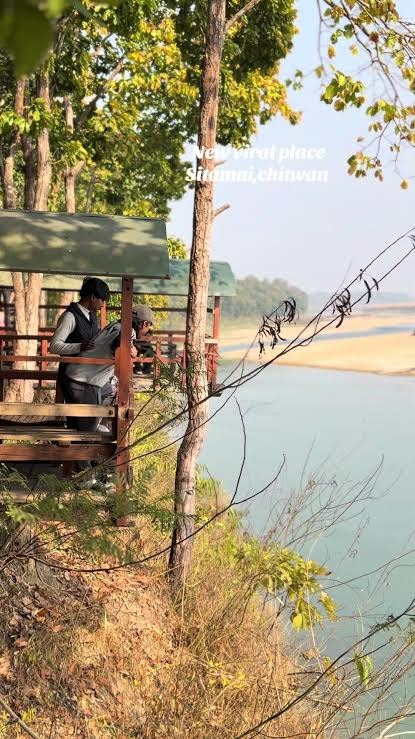
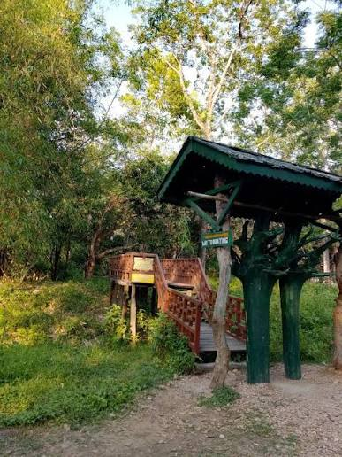
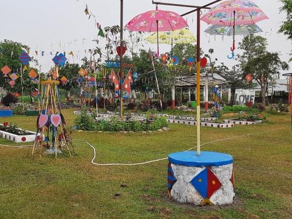
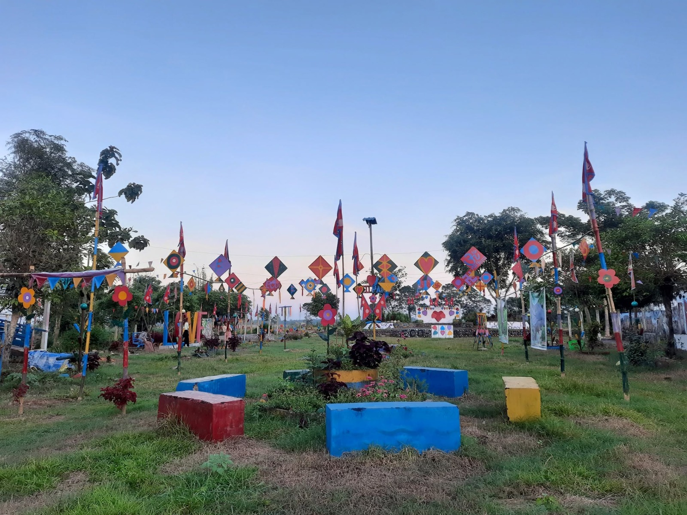
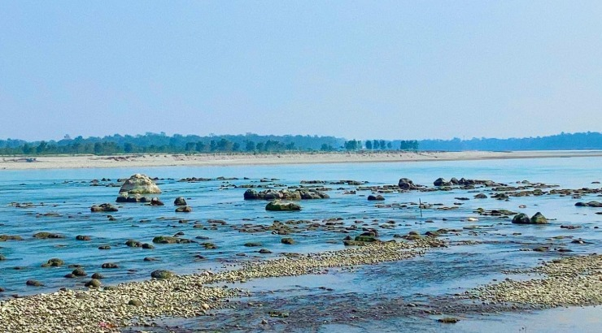
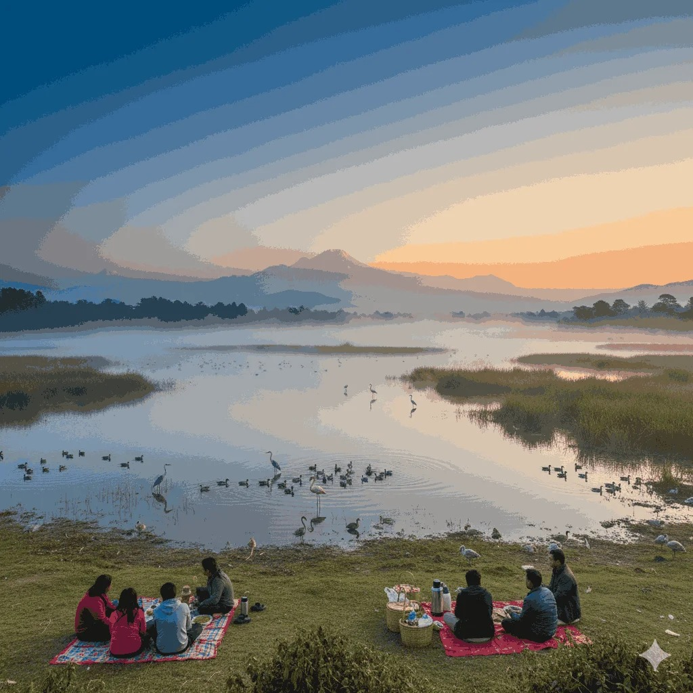
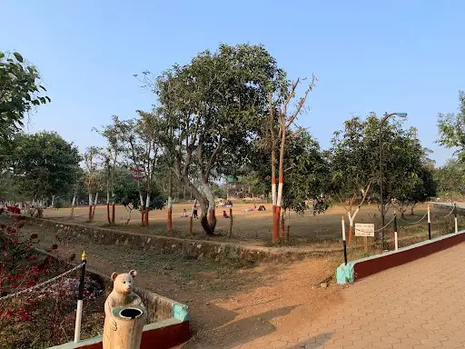
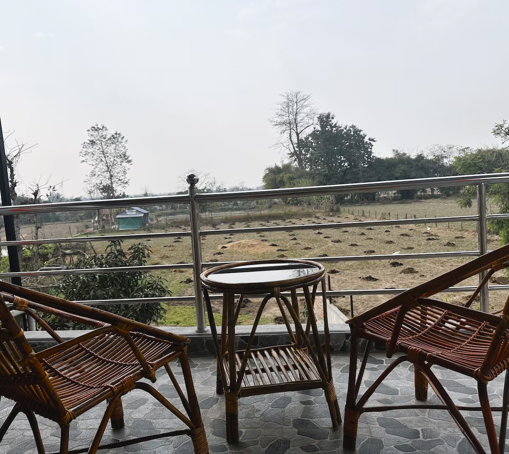

Relax, play and enjoy outdoor moments at some of Bharatpur's popular recreational destinations.
Sitamai is a peaceful recreational destination surrounded by greenery and natural landscapes. Visitors can enjoy picnics, walking, photography and relaxing outdoors while exploring the Sitamai area and its community forest. It is a pleasant place for families and groups looking for a refreshing day away from the busy city.


Eco Park is a green recreational space where visitors can spend time in nature, walk around the park and enjoy a relaxed outdoor environment. With open spaces and greenery, it is suitable for family outings, casual gatherings and photography.


Sano Ghadi, around the Shivaghat area, is a popular local picnic and recreational destination in Bharatpur. The area combines greenery, open spaces and a riverside atmosphere, making it suitable for picnics, spending time with friends and family, photography and outdoor recreation.


Love Dada is a recreational destination known for its open surroundings and relaxed atmosphere. It provides an opportunity to spend time outdoors, enjoy the surrounding landscape and create a memorable day out with friends and family.

